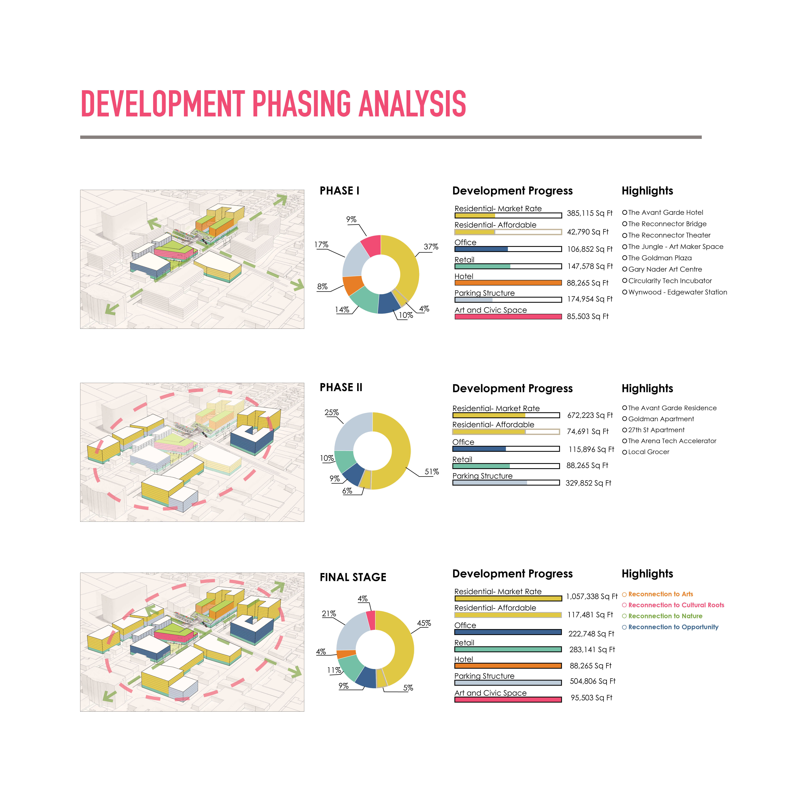
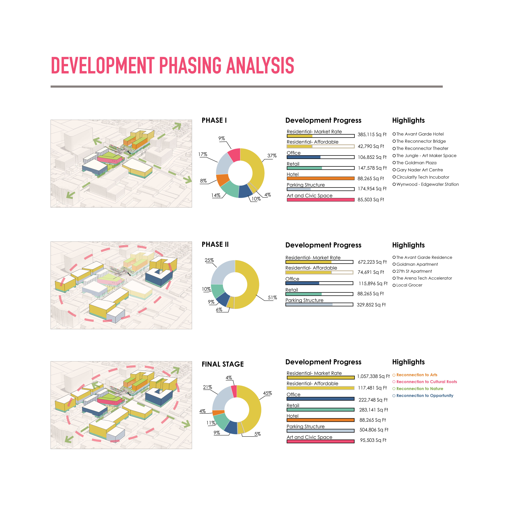
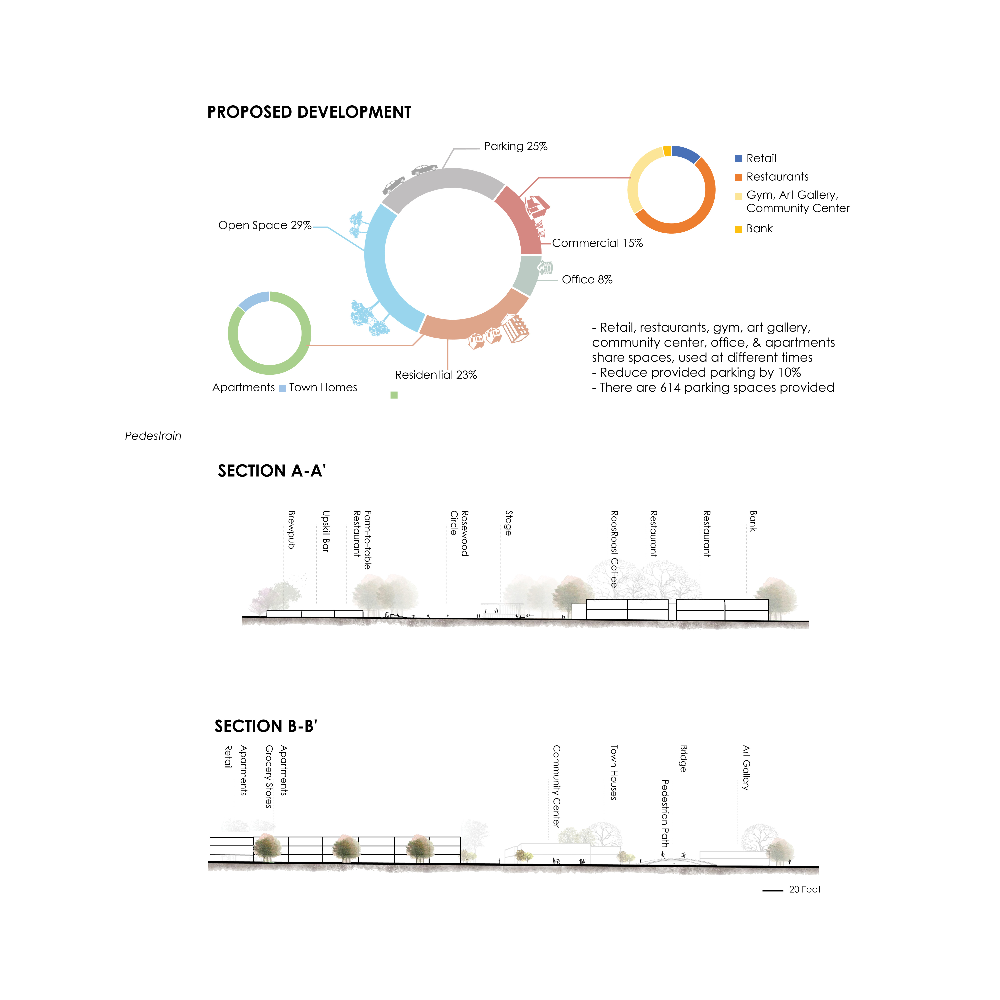
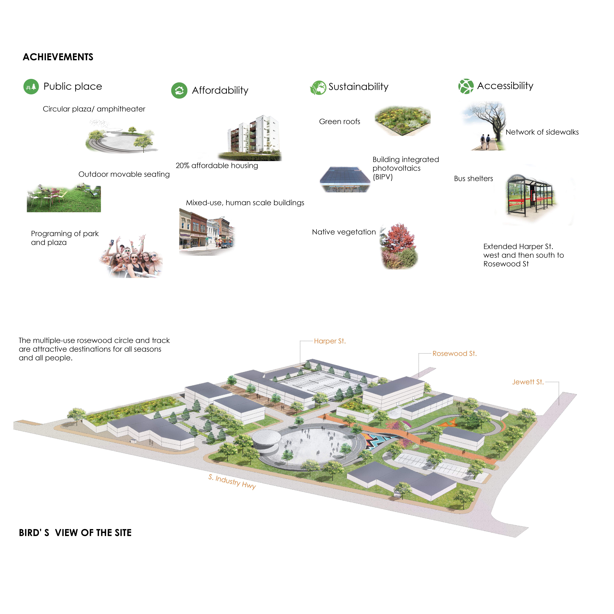
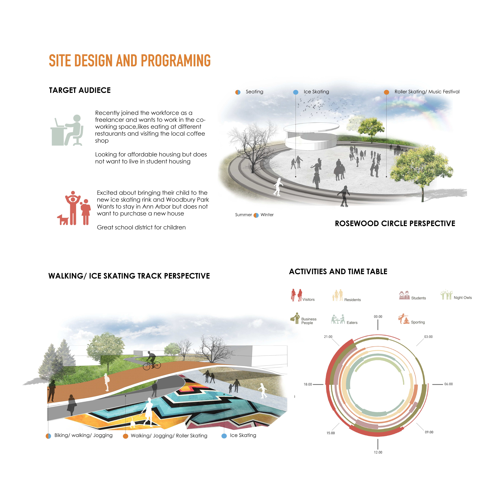
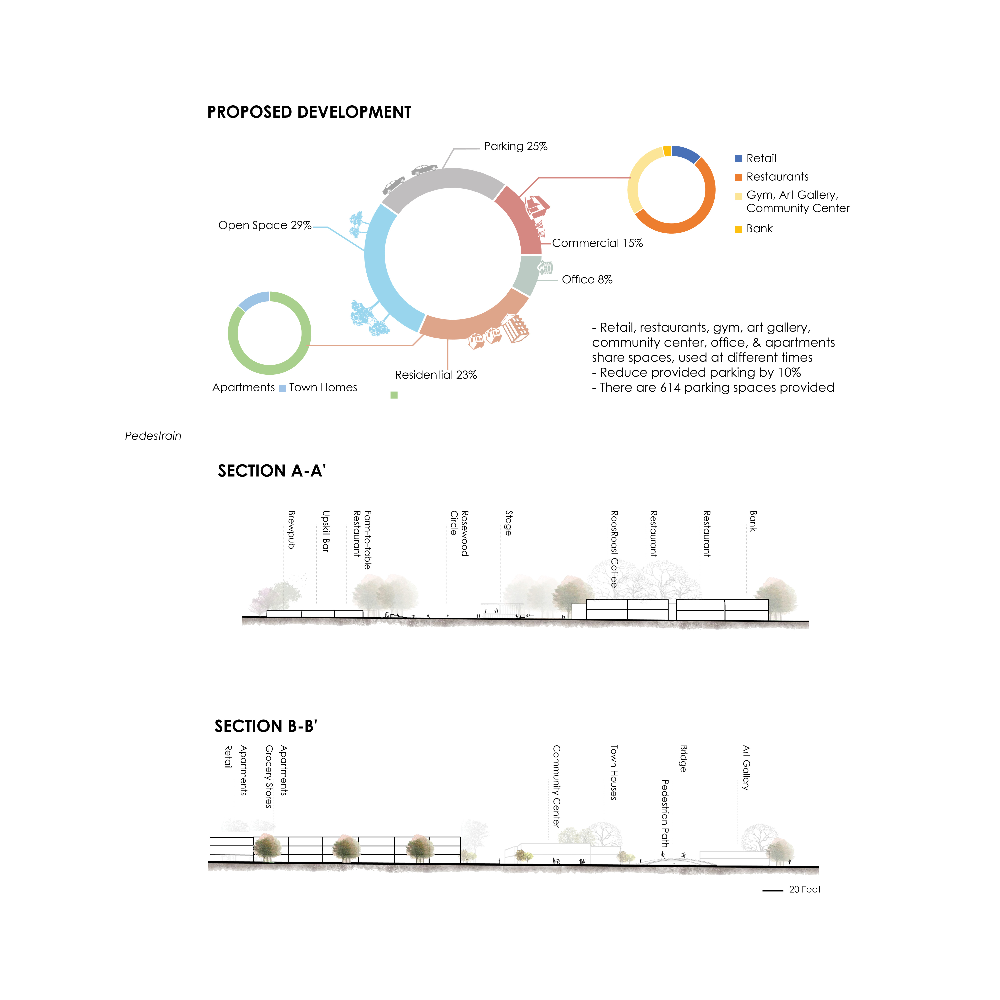
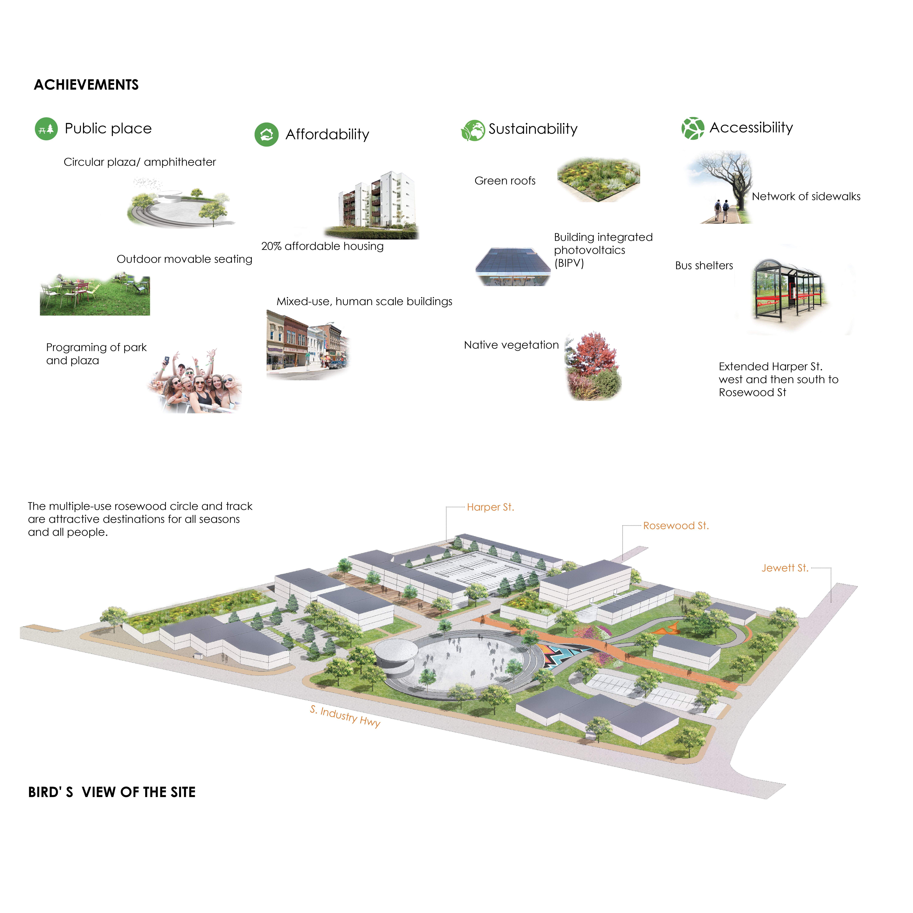
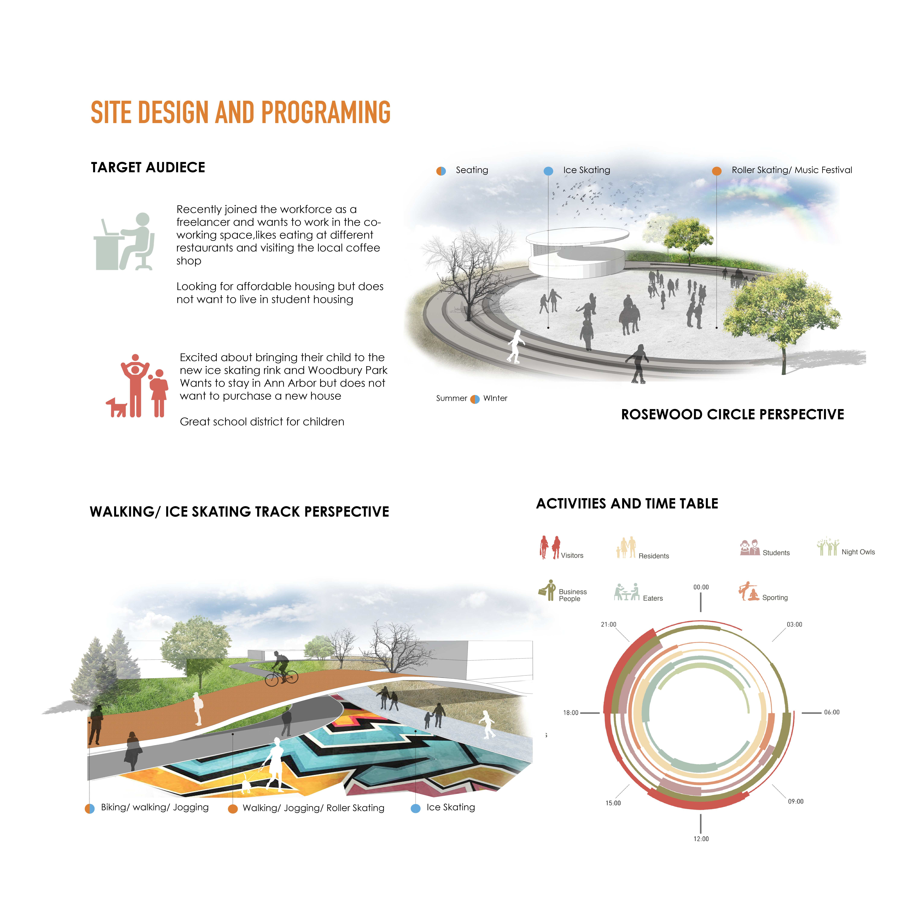

Reconnection: 2020 ULI HINES Design Competition Entry
Location: Miami, FL, USA
Advisor: Marc Norman
Team members: Kungang Ding, Suman Gidwani, Jacob Hite
Responsibility :Team leader, site design, visualiztion
The competition calls for the redevelopment of 51 parcels bettwen Wynwood and Edgewater disctricts of Miami, FL. A tri-rail runs through the development site. The competition challenge is to develop a site with positive ecnomic impact and enhancing environmental sustainability.
Miami is the fastest-growing big city in the country by employed population growth, providing strong opportunity for economic growth for this neighborhood.Our design, Reconnection lies at the crossroads of two distinct Miami neighborhoods, Wynwood and Edgewater, and directly in the path of growth of Midtown Miami. This area has become an urban core outside of the Downtown, and the addition of a Tri-Rail stop could be a catalyst for change, accelerating the area’s growth. Our development is composed of a mix of assets - residential, a hotel, office, retail, art spaces, a library, and parking. Each asset reconnects visitors to this neighborhood in a different way and many could bring ecnomic growth and postive environmental impacts.
 


Rosewood Village: Create a dynammic neighborhood for all seasons
Location: Ann Arbor, MI
Advisor: Larissa Larsen
Team members: Anikka Van Eyl, Ben Meza-Wilson, Siyi Song, James Wooldridge, Zhao Wu
Responsibility :Spatial and data analysi, graphic design, contextual inquiry
With its great location in south Ann Arbor, there is almost no attractive destination for people to linger. This program is dedicated to revitalize the site with integrated approaches. The main strategy is to create more inviting open space, to offer affordable housing, to incorporate sustainable design techniques, and to improve the accessibility of the site.


 




